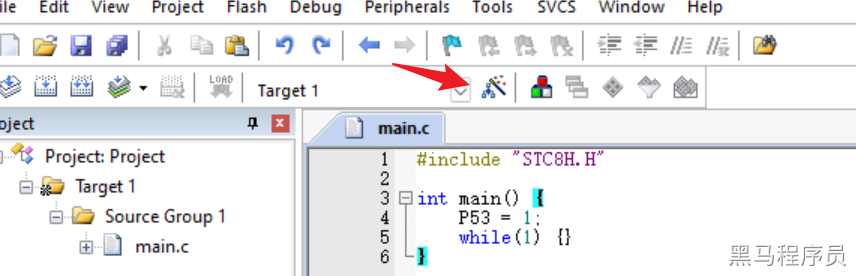
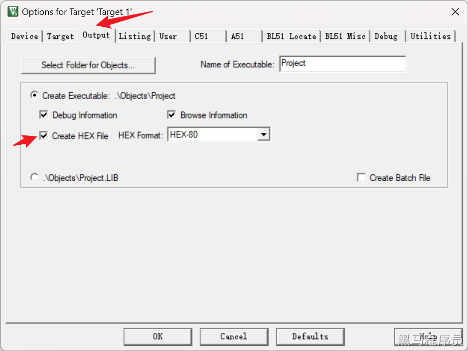
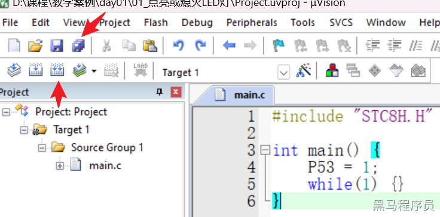
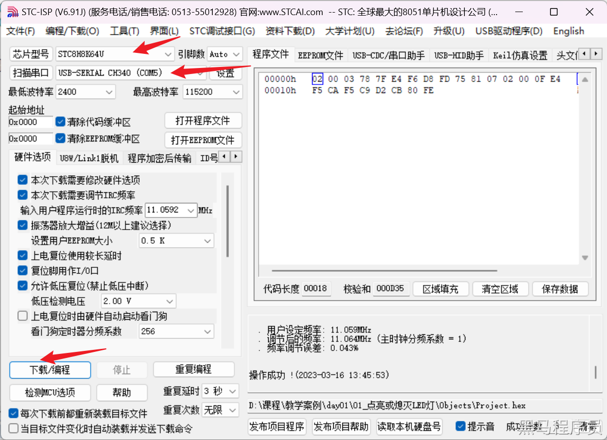
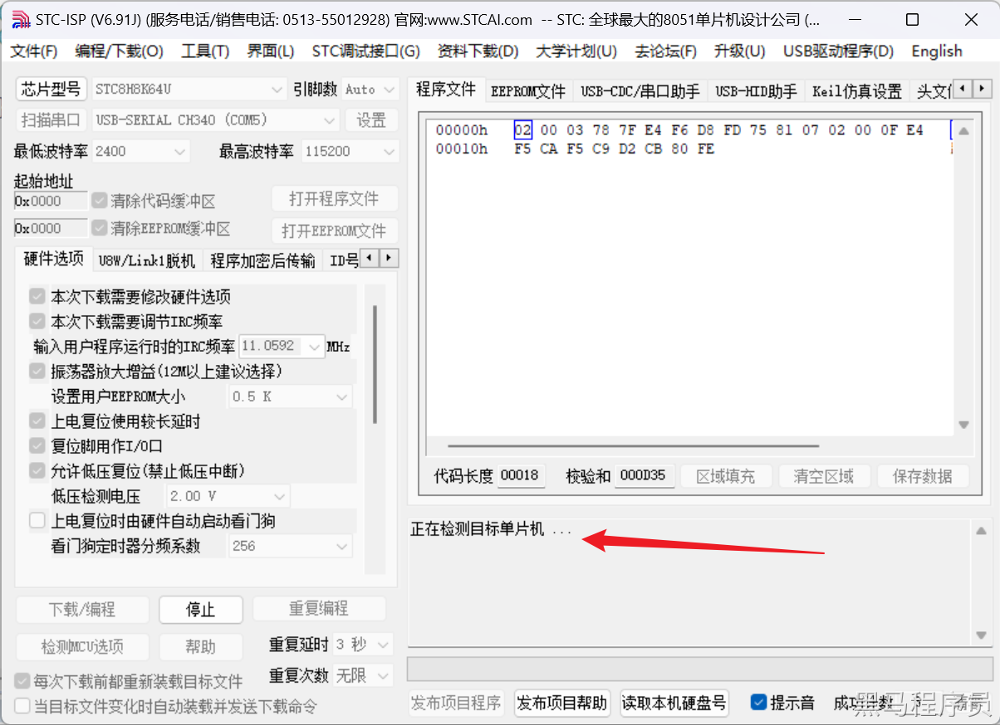

<!DOCTYPE lake>
<h2 data-lake-id="fvAQT" id="fvAQT"><span data-lake-id="u04c3681a" id="u04c3681a">学习目标</span></h2><ul list="u589c39f2"><li data-lake-id="u73d98288" fid="u45dde339" id="u73d98288"><span data-lake-id="udee15978" id="udee15978">学习如何配置C51单片机的端口</span></li><li data-lake-id="uc891acb8" fid="u45dde339" id="uc891acb8"><span data-lake-id="u788db232" id="u788db232">学习如何使用C语言编写控制LED的程序</span></li><li data-lake-id="u5ce66acd" fid="u45dde339" id="u5ce66acd"><span data-lake-id="uf2199b71" id="uf2199b71">学习如何使用Keil C51编译和烧录程序</span></li><li data-lake-id="u44bcb267" fid="u45dde339" id="u44bcb267"><span data-lake-id="ue757f539" id="ue757f539">掌握项目编写流程</span></li></ul><h2 data-lake-id="QtpNK" id="QtpNK"><span data-lake-id="uba5baea6" id="uba5baea6">学习准备</span></h2><ul list="u37a4e83d"><li data-lake-id="u8a722a2c" fid="ufac30d7c" id="u8a722a2c"><span data-lake-id="u47318690" id="u47318690">黑马程序员STC8核心开发板</span></li><li data-lake-id="u22a61b18" fid="ufac30d7c" id="u22a61b18"><span data-lake-id="u956e685b" id="u956e685b">C51的Keil 环境</span></li></ul><h2 data-lake-id="SQhGZ" id="SQhGZ"><span data-lake-id="uc0b6a904" id="uc0b6a904">学习内容</span></h2><h3 data-lake-id="jTKy4" id="jTKy4"><span data-lake-id="u6e2d6989" id="u6e2d6989">原理图</span></h3><p data-lake-id="ub5bff61f" id="ub5bff61f"></p><p data-lake-id="ue3886955" id="ue3886955"><span data-lake-id="u427cb6c8" id="u427cb6c8">通过控制 P5.3引脚输出高电平时，LED灯就点亮，输出低电平时LED灯就熄灭</span></p><p data-lake-id="ubb1cbbfc" id="ubb1cbbfc"><span data-lake-id="ub928360d" id="ub928360d">​</span><br/></p><h3 data-lake-id="KSS4E" id="KSS4E"><span data-lake-id="u64ab0f12" id="u64ab0f12">项目创建</span></h3><p data-lake-id="ucc28b5ae" id="ucc28b5ae"><span data-lake-id="u6bd64306" id="u6bd64306">点亮或是熄灭LED</span></p><ol list="u7f351c80"><li data-lake-id="ucde13fca" fid="u5385487b" id="ucde13fca"><span data-lake-id="u71cce484" id="u71cce484">新建项目</span></li></ol><p data-lake-id="u45486019" id="u45486019" style="padding-left: 2em"></p><p data-lake-id="u029c6402" id="u029c6402" style="padding-left: 2em"><span data-lake-id="uf26c46ae" id="uf26c46ae">根据个人情况，选择合适的目录，创建项目</span></p><ol list="u22bdb285" start="2"><li data-lake-id="ue44ee455" fid="u9c5ae6e5" id="ue44ee455"><span data-lake-id="u2d44dbc2" id="u2d44dbc2">配置开发板信息</span></li></ol><p data-lake-id="u63087a6c" id="u63087a6c" style="padding-left: 2em"><span data-lake-id="u6c5d5dc8" id="u6c5d5dc8">配置设备信息：</span></p><p data-lake-id="ub081c952" id="ub081c952" style="padding-left: 2em"></p><p data-lake-id="uc524583f" id="uc524583f" style="padding-left: 2em"><span data-lake-id="u9bf31297" id="u9bf31297">当前位STC芯片的开发板，选择</span><code data-lake-id="uf5fe0ecc" id="uf5fe0ecc"><span data-lake-id="u12be10d3" id="u12be10d3">STC MCU Database</span></code></p><p data-lake-id="u9b118f91" id="u9b118f91" style="padding-left: 2em"><span data-lake-id="uc140a2ca" id="uc140a2ca">搜素具体芯片型号，进行配置：</span></p><p data-lake-id="u0d523308" id="u0d523308" style="padding-left: 2em"></p><p data-lake-id="u1739b9d7" id="u1739b9d7" style="padding-left: 2em"><span data-lake-id="u6d889a43" id="u6d889a43">黑马程序员的stc芯片位STC8H系列下的8K64U型号，选择对应型号即可。如果以后采用的是其他型号，则选择其他型号</span></p><ol list="ud4a9e6bb" start="3"><li data-lake-id="u9b6b0d01" fid="u4d735461" id="u9b6b0d01"><span data-lake-id="u924913a4" id="u924913a4">取消汇编配置，新建完成项目</span></li></ol><p data-lake-id="u39df02c5" id="u39df02c5" style="padding-left: 2em"></p><p data-lake-id="uf12f5194" id="uf12f5194"><br/></p><p data-lake-id="u0fda3f4d" id="u0fda3f4d"><span data-lake-id="u6ac2a7cb" id="u6ac2a7cb">项目新建完成后，目录结构如下：</span></p><p data-lake-id="ufe7a9bc6" id="ufe7a9bc6"></p><ul list="ueb345c09"><li data-lake-id="uc8aebce7" fid="u5e01c8e0" id="uc8aebce7"><span data-lake-id="uef840b4c" id="uef840b4c">Target 1为项目根节点</span></li><li data-lake-id="u520bb6f5" fid="u5e01c8e0" id="u520bb6f5"><span data-lake-id="ue3c1cc97" id="ue3c1cc97">Source Group1为源码目录</span></li><li data-lake-id="u6e589221" fid="u5e01c8e0" id="u6e589221"><span data-lake-id="u547688ad" id="u547688ad">可根据个人喜好来修改他们的名称</span></li></ul><h3 data-lake-id="ntDML" id="ntDML"><span data-lake-id="u0128defd" id="u0128defd">编码实现</span></h3><h4 data-lake-id="gYcOp" id="gYcOp"><span data-lake-id="u04d98b72" id="u04d98b72">结构准备</span></h4><p data-lake-id="u51740b83" id="u51740b83"><span data-lake-id="u77d5e782" id="u77d5e782">在源码目录，右键打开操作面板，选择</span><code data-lake-id="u14addde2" id="u14addde2"><span data-lake-id="u0eb199b3" id="u0eb199b3">Add New Item to Group ...</span></code><span data-lake-id="u64d70de6" id="u64d70de6">​</span></p><p data-lake-id="uca31348f" id="uca31348f"></p><p data-lake-id="u17274928" id="u17274928"><span data-lake-id="u5f2a02b7" id="u5f2a02b7">新建main.c文件。根据面板提示，选择</span><code data-lake-id="u8d164b0a" id="u8d164b0a"><span data-lake-id="udc914c82" id="udc914c82">C File</span></code><span data-lake-id="u4239a33f" id="u4239a33f">,确定好文件名称，当前的文件名称为`main`。</span></p><p data-lake-id="u08ee508c" id="u08ee508c"></p><p data-lake-id="u89b3f98b" id="u89b3f98b"><code data-lake-id="ue25b7a6f" id="ue25b7a6f"><span data-lake-id="u8e09d7a3" id="u8e09d7a3">Add</span></code><span data-lake-id="u8ab3b3f8" id="u8ab3b3f8">完成后，在源码目录中会多一个 </span><code data-lake-id="u09b4969e" id="u09b4969e"><span data-lake-id="u992c0ac1" id="u992c0ac1">main.c</span></code><span data-lake-id="u0c2ba9fb" id="u0c2ba9fb">文件</span></p><p data-lake-id="ud6decbef" id="ud6decbef"><span data-lake-id="u985197a1" id="u985197a1">​</span><br/></p><h4 data-lake-id="d5j7A" id="d5j7A"><span data-lake-id="u75d50b5b" id="u75d50b5b">代码实现</span></h4><p data-lake-id="u8e4de5f3" id="u8e4de5f3"><span data-lake-id="u49930167" id="u49930167">在 main.c中编写代码，实现main函数</span></p><span class="yuque-card-unsupported">[codeblock]</span><span class="yuque-card-unsupported">[codeblock]</span><h3 data-lake-id="qWPYX" id="qWPYX"><span data-lake-id="u897fbf39" id="u897fbf39">编译烧录运行</span></h3><ol list="u7fdc652a"><li data-lake-id="u8096a8c0" fid="u8fc8b443" id="u8096a8c0"><span data-lake-id="ub7ea9b9b" id="ub7ea9b9b">如果没有配置编译输出，需要进行输出配置</span></li></ol><p data-lake-id="u24346cfd" id="u24346cfd" style="padding-left: 2em"></p><p data-lake-id="ueb7dba87" id="ueb7dba87" style="padding-left: 2em"><span data-lake-id="u4e1d86ab" id="u4e1d86ab">在</span><code data-lake-id="u470f7826" id="u470f7826"><span data-lake-id="u4b266f4b" id="u4b266f4b">Output</span></code><span data-lake-id="uf1c84abe" id="uf1c84abe">中 勾选 </span><code data-lake-id="u5e17b265" id="u5e17b265"><span data-lake-id="ud713b5ed" id="ud713b5ed">Create HEX File</span></code></p><p data-lake-id="ua5972c64" id="ua5972c64" style="padding-left: 2em"></p><ol list="u2e8cbc01" start="2"><li data-lake-id="uab2bc591" fid="u718715c3" id="uab2bc591"><span data-lake-id="ufe40ceb9" id="ufe40ceb9">保存与编译代码</span></li></ol><p data-lake-id="u0569e65b" id="u0569e65b" style="padding-left: 2em"></p><p data-lake-id="u6bde6020" id="u6bde6020" style="padding-left: 2em"><span data-lake-id="udc1099a6" id="udc1099a6">编译完成后，来到项目创建的目录下的</span><code data-lake-id="uccf4bdc2" id="uccf4bdc2"><span data-lake-id="u4174e5e3" id="u4174e5e3">Objects</span></code><span data-lake-id="u6e87f3ea" id="u6e87f3ea">目录中，会有一个以</span><code data-lake-id="u2579bbb9" id="u2579bbb9"><span data-lake-id="u348aa17c" id="u348aa17c">.hex</span></code><span data-lake-id="u9c70b16c" id="u9c70b16c">结尾的二进制文件，这个文件就是编译的结果，也是需要进行烧录的二进制文件</span></p><ol list="u29a7716d" start="3"><li data-lake-id="ua7b66476" fid="u63452c82" id="ua7b66476"><span data-lake-id="u12b1ffed" id="u12b1ffed">烧录</span></li></ol><p data-lake-id="u15f85fd8" id="u15f85fd8" style="text-indent: 2em"><span data-lake-id="u41065ba4" id="u41065ba4">打开程序文件</span></p><p data-lake-id="u8cdf4991" id="u8cdf4991" style="text-indent: 2em"><span data-lake-id="uc0c2b92c" id="uc0c2b92c">​</span><br/></p><p data-lake-id="u5dd9bde1" id="u5dd9bde1" style="padding-left: 2em"><span data-lake-id="uee181072" id="uee181072">打开 </span><code data-lake-id="u33af317f" id="u33af317f"><span data-lake-id="u01fdf42c" id="u01fdf42c">STC-ISP</span></code><span data-lake-id="uec6d00e8" id="uec6d00e8">工具，对烧录进行配置</span></p><p data-lake-id="u778be332" id="u778be332" style="padding-left: 2em"></p><p data-lake-id="ub43d706b" id="ub43d706b" style="padding-left: 2em"><br/></p><h3 data-lake-id="eXqJV" id="eXqJV"><span data-lake-id="uea27c2cb" id="uea27c2cb">确保如下事宜</span></h3><ul list="u6d66b477"><li data-lake-id="uf57e066a" fid="u579fd4fa" id="uf57e066a"><span data-lake-id="u17ff6af2" id="u17ff6af2">芯片型号：根据当前开发板STC8型号进行确定，黑马程序员的STC8开发板采用的是</span><code data-lake-id="ub3101d5f" id="ub3101d5f"><strong><span data-lake-id="uf33e5f0a" id="uf33e5f0a">STC8H8K64U</span></strong></code></li><li data-lake-id="ubb9e0cb2" fid="u579fd4fa" id="ubb9e0cb2"><span data-lake-id="u02076994" id="u02076994">串口确认：开发板和PC电脑通过USB进行连接后，会显示串口信息，选择对应的串口，如果未显示COM串口</span></li></ul><ul data-lake-indent="1" list="u6d66b477"><li data-lake-id="u50c0457f" fid="u579fd4fa" id="u50c0457f"><span data-lake-id="uf605a209" id="uf605a209">安装CH340驱动</span></li><li data-lake-id="u336efb0e" fid="u579fd4fa" id="u336efb0e"><span data-lake-id="udbaea591" id="udbaea591">将核心板开关拨到 串口端（非HID端）</span></li></ul><p data-lake-id="ud8203cfd" id="ud8203cfd" style="padding-left: 2em"><span data-lake-id="ud375454d" id="ud375454d">点击</span><code data-lake-id="u726b86f8" id="u726b86f8"><span data-lake-id="u9d42d7a4" id="u9d42d7a4">下载/编程</span></code><span data-lake-id="u4d9bf99c" id="u4d9bf99c">此时，烧录提示中显示 </span><code data-lake-id="ucb139b24" id="ucb139b24"><span data-lake-id="u5b5cb8ab" id="u5b5cb8ab">正在检测单片机....</span></code></p><p data-lake-id="u04e713a5" id="u04e713a5" style="padding-left: 2em"></p><p data-lake-id="u8b92fc92" id="u8b92fc92" style="padding-left: 2em"><span data-lake-id="u9ee032e5" id="u9ee032e5">此时需要</span><strong><span data-lake-id="u414096d7" id="u414096d7">点击开发板中的蓝色按钮</span></strong><span data-lake-id="udd6dc35f" id="udd6dc35f">，进行烧录。</span></p><p data-lake-id="u6ccc4944" id="u6ccc4944" style="padding-left: 2em"><span data-lake-id="uf7976c99" id="uf7976c99">​</span><br/></p>